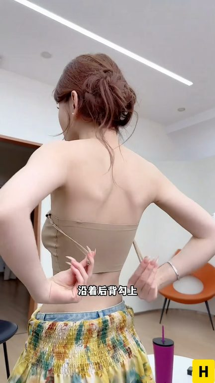
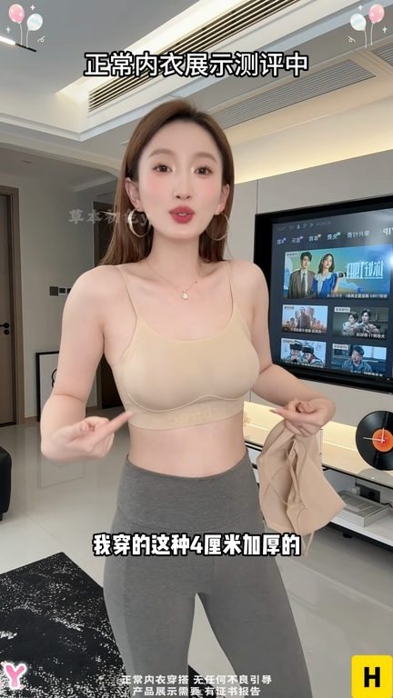
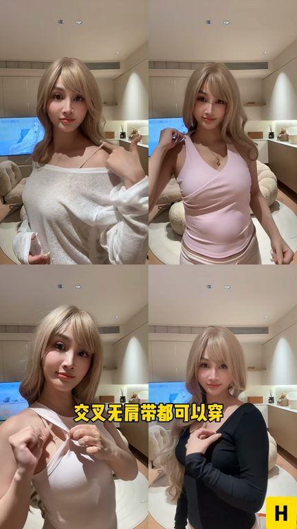
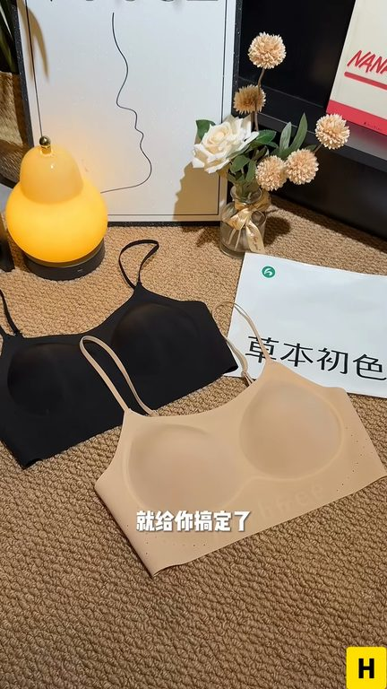

TOP 1 · 代表素材深度拆解
核心放量 点击承压
视频为原始素材 HTTPS 链接；点击后加载，建议在网络环境良好时播放。
14.7万素材消耗
1.36%CTR
32.4%类目消耗占比
-0.52pp较类目均值
表现判断
该素材是类目内第 1 名，属于“核心放量”；CTR 低于类目均值。消耗体现承接规模，CTR 体现首屏与定向效率，两项应结合判断，不能仅以单指标下结论。
表达标签
口播三段式证据
开场钩子你往内撞撞撞撞撞撞撞撞撞撞撞撞撞撞撞撞撞收到屏蔽沿着后背勾上是个尴尬自己的无间带间带你直系沿着后背锤子勾上是个吊带你交叉往后去勾是个交叉什么美贝你把钩子勾到对方的袋子间带全都要调到个最长老袋伸进去再给我调整回来严施和分变挂脖
中段论证逃本出色那不要太懂女生了吧我穿着4厘米加厚的我自己穿的是这种S码的就这个颜色它卖的真是老好了我跟你说如果说你跟我一样就一点都没有的话你就是买这一款它这款穿在身上就有那种小胸显大的感觉包括说它这个穿在身上完全是不跑背不空背的就完全被乱踹的不让现在女招咋回事上衣越做越薄越做越透就算你穿白色的内衣也会透出印子还好我提前就入了草本出色这一款粉底液拘留内衣原本我是抽着…
结尾转化而且是为我们亚洲女性特调的这种粉底液颜色你夏天上身随便穿那种白透薄的衣服都会透出来还做到了厚薄两种背垫偷偷告诉你们就这个厚背内衣还有他的小心机了你看就我这么穿好身材这不就出来了吗后来他还有4AG抗菌认证检测报告也都很齐全明看现在姐妹都可以放进去穿底件内衣就给你搞定了所有穿搭烂闹性价比是真的很高姐妹们…
有效点
- 消耗占比 32.4% 说明具备投放承接能力，但 CTR 较类目均值低 0.52pp
- 素材已进入类目消耗 Top，核心表达具备继续拆分测试的价值
迭代动作
- 重做前 3–5 秒：结果前置、缩短背景铺垫，并把核心人群直接写进首屏字幕
- 视频时长偏长，建议剪出 30–45 秒短版，仅保留钩子、两项证据和一次 CTA
- 复核功效、绝对化及价格稀缺措辞；增加适用边界和效果因人而异提示
合规关注

钩子建立 · 4.1s

场景/问题展开 · 30.8s

卖点证据 · 70.9s

转化收口 · 97.6s
查看完整口播摘要
你往内撞撞撞撞撞撞撞撞撞撞撞撞撞撞撞撞撞收到屏蔽沿着后背勾上是个尴尬自己的无间带间带你直系沿着后背锤子勾上是个吊带你交叉往后去勾是个交叉什么美贝你把钩子勾到对方的袋子间带全都要调到个最长老袋伸进去再给我调整回来严施和分变挂脖一一四种穿法搭配你们上天所有的漏背吊带一致间这才能提现出挂脖穿吊带穿交叉穿甚至还能漏背穿一件内衣就能搭完你衣柜里所有的衣服逃本出色那不要太懂女生了吧我穿着4厘米加厚的我自己穿的是这种S码的就这个颜色它卖的真是老好了我跟你说如果说你跟我一样就一点都没有的话你就是买这一款它这款穿在身上就有那种小胸显大的感觉包括说它这个穿在身上完全是不跑背不空背的就完全被乱踹的不让现在女招咋回事上衣越做越薄越做越透就算你穿白色的内衣也会透出印子还好我提前就入了草本出色这一款粉底液拘留内衣原本我是抽着它小胸拘留去的没想到先拍上隐形的用场了既我不说你们能看得出我穿的内衣吗我朋友说我为了好看现在都不穿内衣了宝贝内衣不是在这吗这种粉底液式的美贝穿了就跟美穿一样不管你是挂脖带交叉补间带都可以穿穿大胸背干干净净一根多余的肩带都没有就算是男的身材也可以让你瞬间平地起高楼整个双手举个头顶你也不用担心他会有空背跑背而且是为我们亚洲女性特调的这种粉底液颜色你夏天上身随便穿那种白透薄的衣服都会透出来还做到了厚薄两种背垫偷偷告诉你们就这个厚背内衣还有他的小心机了你看就我这么穿好身材这不就出来了吗后来他还有4AG抗菌认证检测报告也都很齐全明看现在姐妹都可以放进去穿底件内衣就给你搞定了所有穿搭烂闹性价比是真的很高姐妹们闭眼充就对了